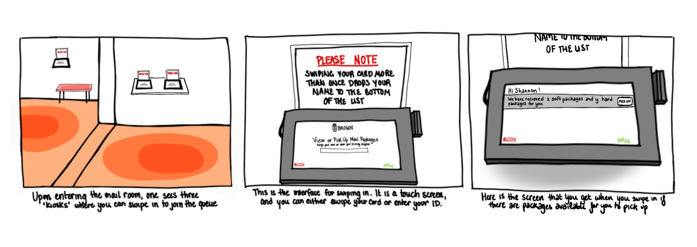

Brown University Mail Room Kiosk
Personas & Storyboarding
October 2022 - CSCI1300 - Procreate for IPad
Introduction
Welcome to my personas and storyboarding project! I decided to observe people use Brown's Mailroom Kiosks to
understand the different personas who use this interface and what their experience is like. I've heard a multitude
of complaints from my peers about the mail room system, so I thought it would be interesting to dive deeper and assess if and how
the system could be optimized!
I conducted interviews and learned more about the different users of these kiosks in order to create Personas for them,
and to storyboard one persona's experience.
Part 1: Sketch & Summary of Interface

First, I visited the mail room kiosks, took some pictures, and sketched the basic screens to get an idea of
how exactly the interface functions.
Part 2: Observations & Interviews
Next, I needed to observe and interview users. I stood outside of the mail room and watched people swipe
their cards at the kiosk.
My Observations
I found that none of the users I observed successfully swiped their card on the first try. In fact, it took
an average of 3 swipes for users to successfully use the card reader. One user even switched kiosks after a
multitude of failed attempts. All of the users I observed seemed to be in a rush, swiping aggressively and
quickly, and barely looking at the screen as they press pick up packages. Another notable fact was that nobody
observed ever used the third kiosk located inside of the mail room.
Interview Questions & Answers
1. How often do you use the Mailroom kiosks?
Two of the users interviews used the mail room once or twice a month, while one used them every couple of days. The user who used it
every couple of days was also the user who struggled to carry all of their packages, and who had the most complaints about the mail room.
2. When and in what circumstances do you go to the mailroom? Are you usually in a rush between classes or do you plan your visits?
All three users stated that they preferred to visit the mail room when they were 'in the area' between or after classes, and that
they would only ever plan a trip to the mail room if they knew they had a lot of mail arriving soon. They all stated that they were
usually in a rush to get somewhere afterwards when picking up their mail.
3. Have you ever had an experience with the Brown Mail Room’s electronic kiosks that stood out to you as particularly bad or good? If so,
could you elaborate on that experience?
Two of the three users that I interviewed had had a notable experience with the mail room. The first had a poor experience the first
time they had gone, as a freshman, and could not figure out how to get the card reader to work. They reported feeling very
embarassed and coming back the next day with a friend to get their mail. Another reported that they generally have a bad
experience attempting to swipe their card, and that they went to the mail room recently and saw a sign above the kiosk that said
that if you swipe twice it pushes you to the bottom of the list. Their whole time at Brown, they'd been swiping twice,
so they were rather disappointed.
4. What is one functionality you would add to the Mailroom kiosks that would improve your experience?
While two of the users interviewed simply responded that they wanted a better card reader, one stated that they would find it helpful
that if when the option to pick up your packages was displayed, they were not all displayed on the same line, so that one could
pick up only some of the packages at a time. This is because they often order a couple of large packages at a time, and find it
very difficult to carry them to their dorm all at once. They also found it confusing that there were two kiosks outside and another inside, as they couldn't
tell if they all served the same purpose, and felt that it would be better if they were all next to each other.
Part 3: User Personas - Freshman Frank and Shopaholic Shannon
I created two different personas with different thoughts and needs based on the people that I interviewed, Shopaholic Shannon
and Freshman Frank, illustrated above. Finally, I created a storyboard to better illustrate Shannon's experience and emotions:
Part 4: Storyboard - Shopaholic Shannon
This storyboard illustrates Shopaholic Shannon's tragic experience with the mailroom kiosks
Takeaways
This assignment was a very good introduction to UI/UX design, and taught me to think about interfaces in a different
way than I had before. After I didd this project, I would critically assess different interfaces that I came across in my day to day life in the back of my head.
I learned through my interviews that everybody has a different opinion on an interface and a different set of criteria that apply to them.
Overall, I really enjoyed talking to people in public and assessing their different needs.